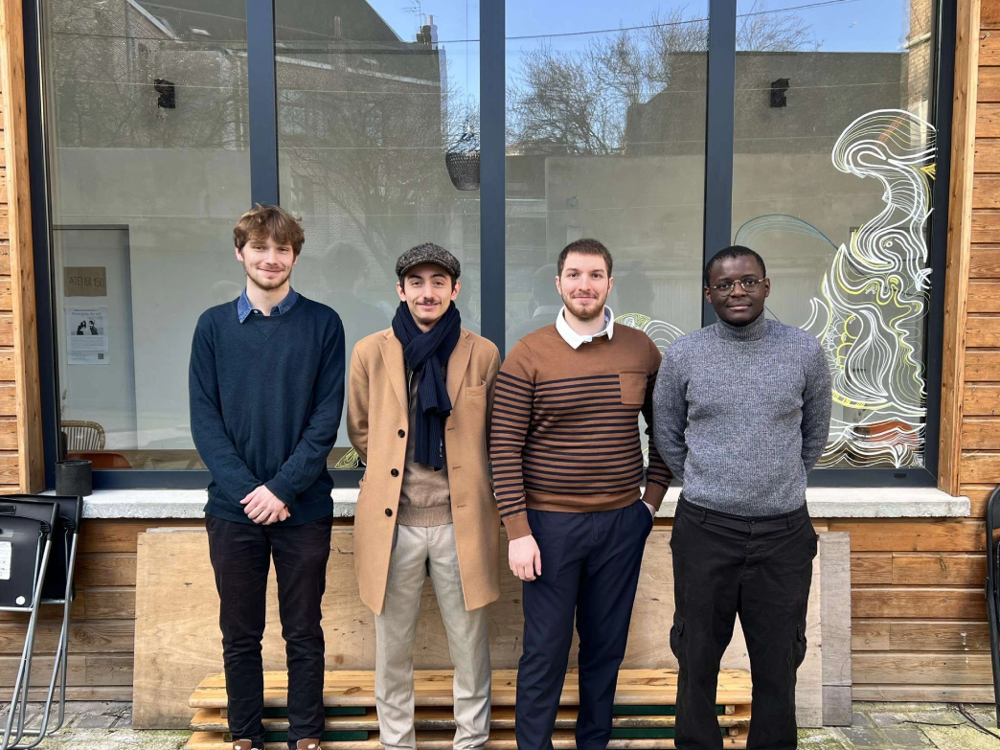

Résumé
MASC-IT est une entreprise de services informatiques créée pendant mes études (fin de licence en parallèle du master), avec l’idée de proposer une ESN orientée “terrain” : des interventions rapides, un diagnostic compréhensible et des solutions pragmatiques.
Le projet couvre à la fois le service aux particuliers (PC, consoles, téléphones, conseils) et l’accompagnement des professionnels (gestion de parc, déploiements, bases de données, sites web, réseaux sociaux, assistance et support). L’objectif était de savoir s’adapter : petites demandes comme projets plus structurés.
Objectifs
- Fiabilité : interventions propres, documentées, et solutions durables.
- Pédagogie : expliquer clairement (diagnostic, options, coûts, risques).
- Polyvalence : couvrir support, infra, web, data, et conseil selon le besoin.
- Professionnalisation : process simples (prise de besoin, devis, livraison, suivi).
- Relation client : être joignable, transparent, et orienté résolution.
Offre & services
Particuliers
Accompagnement pour améliorer, réparer ou optimiser du matériel du quotidien, avec une approche “diagnostic → options → action”. L’objectif : remettre en état et prolonger la durée de vie.
- Montage PC / upgrade / conseils composants
- Réparation & entretien (nettoyage, optimisation, réinstallation)
- Assistance et conseils (usage, sauvegardes, bonnes pratiques)
- Interventions autour des téléphones et périphériques (selon besoin)
Professionnels
Prestations adaptées aux structures : associations, PME et professions libérales, avec une attention particulière à la continuité de service et à la simplicité d’exploitation.
- Installation et gestion de parc informatique
- Déploiements (postes, imprimantes, outils, comptes)
- Support & assistance (incidents, accompagnement utilisateurs)
- Réseaux & mise en place (selon contexte)
Web & data
Réalisation de besoins “projet” : présence en ligne, outillage interne, bases de données, et automatisations. Objectif : livrer quelque chose d’utilisable, maintenable, et aligné sur le réel.
- Création/maintenance de sites web
- Réseaux sociaux : mise en place & cohérence de présence
- Bases de données pour associations / petites structures
- Intégrations simples et automatisations
Méthode
Cycle d’intervention
- Prise de besoin : comprendre l’usage, le contexte, et les contraintes.
- Diagnostic : identifier la cause racine et les impacts.
- Options : proposer plusieurs solutions (coût/temps/risques), sans pousser à l’achat inutile.
- Réalisation : intervention propre, tests, validation.
- Suivi : conseils et recommandations pour éviter la récidive.
Gestion projet (pro)
- Cadrage : objectifs, périmètre, contraintes, priorités.
- Livraison incrémentale : itérations courtes et retours rapides.
- Documentation : procédures simples (pour exploitation et reprise).
- Stabilité : privilégier l’efficacité et la maintenance à long terme.
Qualité & sécurité
Sur MASC-IT, l’enjeu n’était pas “faire vite”, mais faire proprement : limiter les retours, sécuriser les postes, et éviter les mauvaises surprises. Même sur des petites structures, les bonnes pratiques font la différence.
- Hygiène : mises à jour, antivirus, durcissement de base, comptes et mots de passe.
- Sauvegardes : recommandations simples, adaptées aux besoins (et test de restauration quand possible).
- Confidentialité : prudence sur la manipulation de données (notamment clients sensibles).
- Traçabilité : état initial → actions réalisées → tests → conseils (résumé clair).
- Standardisation : réduire le “bricolage” et favoriser des solutions maintenables.
Résultats
Projets réalisé
35 Projets
avis google
+15 avis 5 étoiles
Positionnement
Particuliers + pros
Aperçu

Notes & détails
Exemples de missions
- Montage/optimisation PC : besoin → sélection composants → montage → tests
- Remise en état poste : diagnostic → sauvegarde → réinstallation/optimisation
- Association : base de données pour structurer/centraliser l’information
- PME : mise en place/gestion de parc et support utilisateurs
- Cabinet d’avocats : maintenance et Accompagnement
Outils & pratiques
- Checklists d’intervention (avant/après)
- Documentation et mini-guides pour les utilisateurs
- Standardisation des postes et procédures
- Suivi simple des demandes et des livraisons
- Recommandations sécurité et sauvegardes